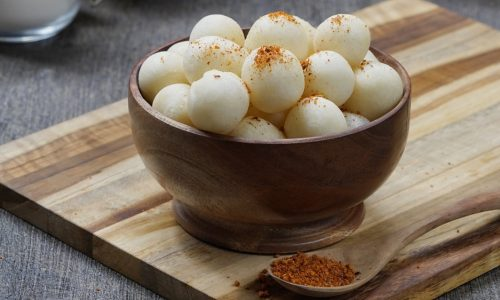

Back to homepage
Cimol

Simple and delicious crispy Indonesian snack!
Ingredients:
- 500g of tapioca Kanji flour
- 3 tsb of flour
- 3 cloves of garlic
- 1 tsb of Masako powder
- 1/2 tsb pepper powder
- Salt to taste
- Chilli powder to taste
- 200 ml of water
Steps:
- Crush the garlic with the salt
- Boil water and put in the crushed garlic
- Mix the tapioca flour, pepper, and Masako powder together while slowly pouring in the boiled water
- Mix or knead the dough until it has a smooth texture
- Form the dough into marble sized balls
- Fry the dough in the oil before the oil heats up
- Fry the balls of dough till it starts to expand, and stir it around to make sure it cooks evenly
- You'll know they're done when they have a nice white color and have expanded quite a bit in size
- Serve your cimol with the chilli powder or any flavoring you want and enjoy